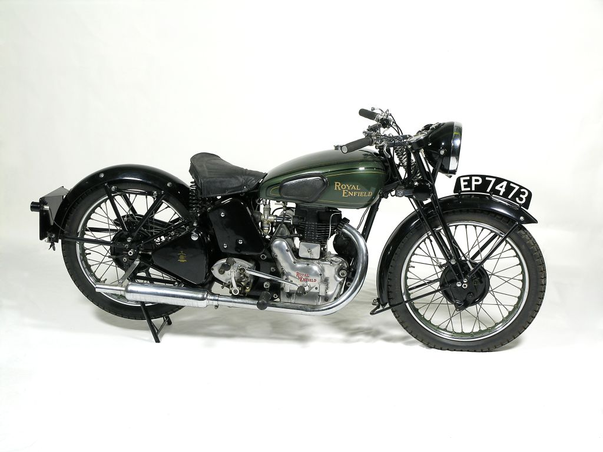
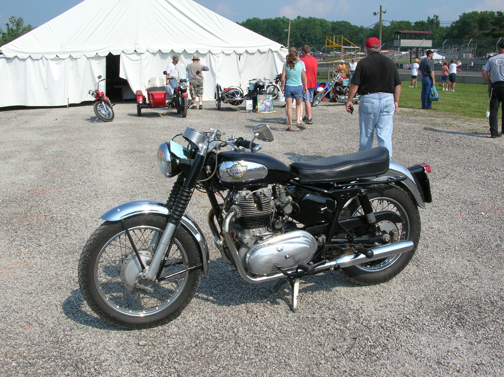

„Royal Enfield“ buvo prekės ženklas, kuriuo „Worcestershire“ mieste Redditch mieste „Enfield Cycle Company Limited“ buvo parduodami jų gaminami motociklai, dviračiai, vejapjovės ir stacionarūs varikliai. „Enfield Cycle Company“ taip pat naudojo prekės ženklą „Enfield“ be „Royal“. Pirmasis „Royal Enfield“ motociklas buvo pastatytas 1901 m. „Enfield Cycle Company“ yra atsakinga už „Royal Enfield Bullet“, ilgiausiai gyvavusio motociklo konstrukcijoje, dizainą ir originalią gamybą. „Royal Enfield“ atsarginių dalių operacija buvo parduota „Velocette“ 1967 m., Kuri pasinaudojo susitarimu trejiems metams iki jų uždarymo 1971 m. Pradžioje. Likęs „Enfield“ motociklų verslas 1967 m. Tapo „Norton Villiers“ dalimi, o verslas galiausiai buvo uždarytas 1978 m.


